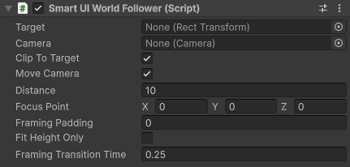
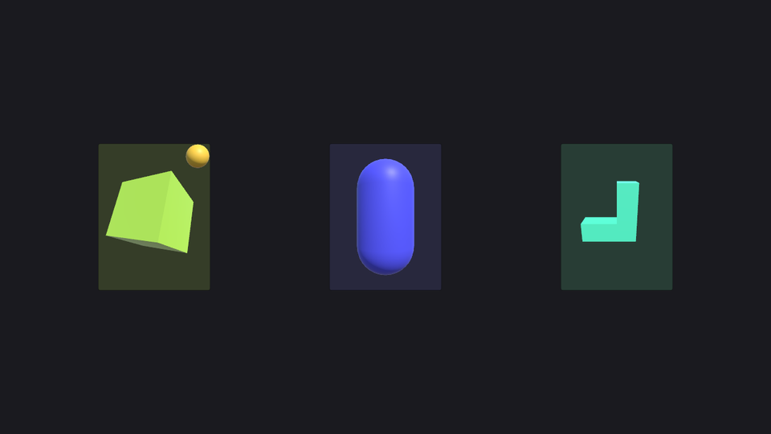

Smart UI World Follower component
Shows a world object, for example a 3D model, inside a Rect Transform of your UI through a camera of its own. Typical uses are a character in a menu slot or an item in a shop slot that has to stay in place on every screen size.
Add the component to the world object and assign the Target and the Camera.
Tip
Not sure whether you need the World Follower or the Smart UI Mesh Fitter? See 3D objects in the UI.

| Field | Description |
|---|---|
| Target | The Rect Transform the object is shown in, usually inside a UI Scaler. A Rect Transform with zero width or height works as a point: the object is placed on it and keeps the size the camera alone gives it. |
| Camera | The camera that shows the object. The follower drives its projection, and with Move Camera on also its position, so two followers must not share one camera. |
| Clip To Target | On: the camera only draws the on-screen part of the Target, so nothing outside the Target appears and a Target partly off-screen is cut, not squeezed. Turn it off when the camera must keep drawing its whole viewport: the main scene camera, or an Overlay camera in a URP camera stack, which ignores its own Viewport Rect. The camera then draws everything in its Culling Mask, so a camera that belongs to one object must show only that object. |
| Move Camera | On: the follower places the camera Distance behind the focus point, so the object is seen head-on. Off: the camera position and rotation are left to something else, for example Cinemachine or an animation, and the follower only shifts the projection so the focus point stays in the center of the Target. |
| Distance | With Move Camera on, how far the camera stays behind the focus point, along the camera's forward direction. Together with the camera's Field of View (or Size for an orthographic camera) it decides how big the object looks: the field of view covers the height of the Target. |
| Focus Point | The point of the object, in its local space, that is kept in the center of the Target. Use it when the object's pivot is not where its middle is, for example a character with its pivot at the feet. |
| Framing Padding, Fit Height Only, Framing Transition Time | Used when the object has Smart UI Framing Bounds. The projection is then zoomed so the framing bounds fit the Target, and their center replaces the Focus Point. |
How it works
After the UI Scalers are updated each frame, the follower shifts the camera's projection so that the focus point lands in the center of the Target. With Move Camera on it also places the camera Distance behind the focus point first. With Clip To Target on, the camera's Viewport Rect is set to the on-screen part of the Target, so the object can be partly off-screen together with its Target without being squeezed.
Set up the camera like this:
- Clear Flags: Depth only, so the UI and the main camera image stay visible around the object.
- Culling Mask: only the layer of the object.
- A higher Depth than the main camera, so it draws after it. In a URP camera stack, make it an Overlay camera, turn Clip To Target off and keep its Viewport Rect the same as the main camera's.
Three shop cards, each showing a 3D model through a World Follower and a camera of its own. The models stay in their cards on every screen shape.

Render textures
When the Target is inside a Screen Space Camera canvas that renders into a Render Texture, for example with a custom UI Scaler, give the follower camera the same Target Texture. The follower then works in the texture's pixels, and the object becomes part of the image wherever that image is shown.
The follower camera clears only the depth, and only inside its own viewport. Make sure a camera with a lower Depth clears the whole texture every frame, for example the camera of that canvas with Clear Flags set to Solid Color. Otherwise pixels from earlier frames stay where the object was before its Target moved.
A character in the free space of a menu
In a lobby or character screen the 3D scene is usually the background, with the character standing in the space the menu panels leave free. That free space moves with the screen shape: on a phone or a tablet the panels take more or less room, and on an ultrawide screen the character would drift away from the panels. Put the follower on the main scene camera to keep the character in that space:
- Add a Rect Transform to the UI layout where the character should stand, for example between the side panels.
- Add the follower to the character, assign that Rect Transform as the Target and the main scene camera as the Camera.
- Turn Clip To Target off, so the camera still draws the whole screen.
- Turn Move Camera off and place the camera yourself, or with Cinemachine.
The follower then shifts the camera's picture so the character lands on the Target, like the lens shift of a real camera, without moving or turning the camera. With a Target of zero size only the position follows the layout and the camera keeps its own framing, which usually looks most natural. With a sized Target the character's height also follows the Target height, and the background shows a wider view when the Target is small.
Good to know
- Each follower uses a camera of its own, which is one more camera to render. A few followers are fine, for a grid of many items rendering each item once into a texture is cheaper.
- The follower camera sees the scene lights and post processing like any other camera. To light an object differently, use layers and the lights' culling masks.
Note
A Screen Space Overlay canvas is always drawn on top of all cameras. To place the object between UI layers, use Screen Space Camera canvases in a camera stack.